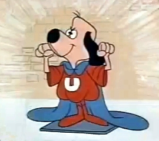
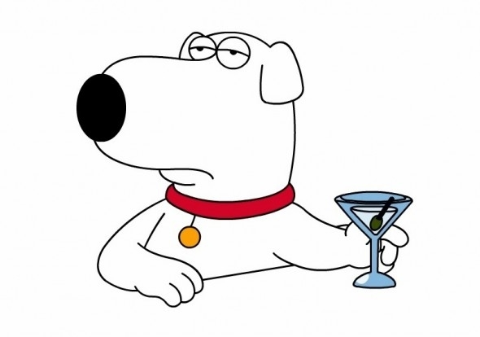

1. Scooby Doo
Scooby is the best dog he not only solves spooky mysteries but he might have the biggest apetite of any fictional character.
2. Underdog
He's probably the strongest cartoon dog you could argue Clifford because how big he is but I'm going with Underdog. He's also a very nice doggy and a great shoeshine.

3. Brian Griffin
Rounding out the top 3 I have Brian Griffin. Brian may be an alcoholic and one of the most selfcentered characters in all of cartoon history but he's easily the funniest cartoon dog.

Here are all the links for the websites I got the pictures from: https://en.wikipedia.org/wiki/Underdog_(TV_series) https://www.looper.com/140499/things-you-only-notice-in-scooby-doo-as-an-adult/ https://memegenerator.net/Brian-Griffin-Martini-Meme